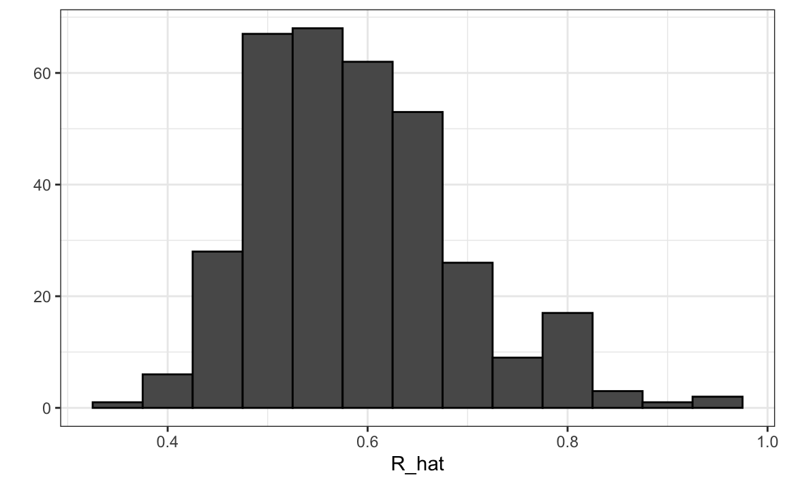
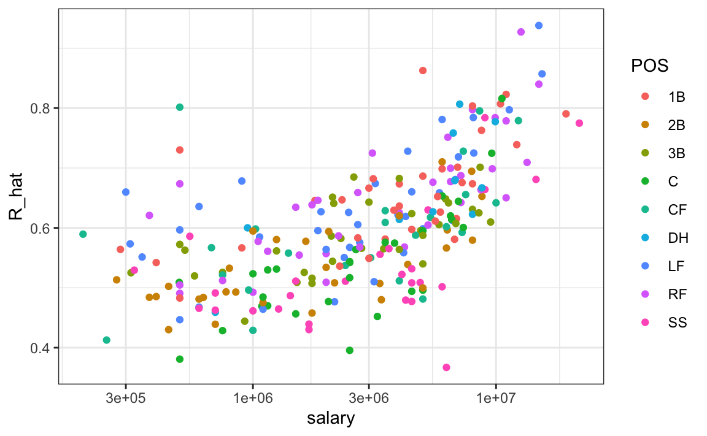

Capítulo 18 Modelos lineales
Desde el desarrollo original de Galton, la regresión se ha convertido en una de las herramientas más utilizadas en la ciencia de datos. Una razón por esto es que la regresión nos permite encontrar relaciones entre dos variables tomando en cuenta los efectos de otras variables que afectan a ambas. Esto ha sido particularmente popular en campos donde los experimentos aleatorios son difíciles de ejecutar, como la economía y la epidemiología.
Cuando no podemos asignar aleatoriamente a cada individuo a un grupo de tratamiento o control, la confusión (confounding en inglés) es particularmente frecuente. Por ejemplo, consideren estimar el efecto de comer comidas rápidas en la esperanza de vida utilizando datos recopilados de una muestra aleatoria de personas en una jurisdicción. Es más probable que los consumidores de comida rápida sean fumadores, bebedores y tengan ingresos más bajos. Por lo tanto, un modelo sencillo de regresión puede sobrestimar el efecto negativo de la comida rápida en la salud. Entonces, ¿cómo explicamos la confusión en la práctica? En este capítulo aprendemos cómo los modelos lineales pueden ayudar con estas situaciones y cómo pueden usarse para describir cómo una o más variables afectan el resultado.
18.1 Estudio de caso: Moneyball
El libro Moneyball: El arte de ganar un juego injusto de Michael Lewis se trata del equipo de béisbol los Atléticos de Oakland, también conocidos como los A’s, y su gerente general, la persona encargada de construir el equipo, Billy Beane.
Tradicionalmente, los equipos de béisbol usan scouts, o buscadores de talento, para ayudarlos a decidir qué jugadores contratar. Estos scouts evalúan a los jugadores viéndolos jugar. Por esta razón, tienden a favorecer a los jugadores atléticos con habilidades físicas observables y, en general, hay consenso entre los scouts sobre quiénes son los mejores jugadores. Como consecuencia, hay mucha demanda para estos jugadores, lo cual aumenta sus salarios.
De 1989 a 1991, los A’s tuvieron una de las nóminas más altas del béisbol. Pudieron comprar los mejores jugadores y, durante estos años, fueron uno de los mejores equipos. Sin embargo, en 1995, el dueño del equipo cambió y la nueva administración recortó drásticamente el presupuesto, dejando al entonces gerente general, Sandy Alderson, con una de las nóminas más bajas en el béisbol. Éste ya no podía permitirse el lujo de los jugadores más codiciados y, por eso, comenzó a utilizar un enfoque estadístico para encontrar ineficiencias en el mercado. Alderson fue mentor de Billy Beane, quien lo sucedió en 1998 y aceptó por completo la ciencia de los datos, en vez de los scouts, como un método para encontrar jugadores de bajo costo que, según los datos, ayudarían al equipo a ganar. Hoy, esta estrategia ha sido adaptada por la mayoría de los equipos de béisbol. Como veremos, la regresión juega un papel importante en este enfoque.
Como motivación para este capítulo, fingiremos que es 2002 y trataremos de construir un equipo de béisbol con un presupuesto limitado, tal como lo hicieron los Atléticos. Para apreciar la dificultad del reto, tengan en cuenta que en 2002 la nómina de los Yankees de $125,928,583 era más del triple de la de los Atléticos de Oakland de $39,679,746.

18.1.1 Sabermetrics
Las estadísticas se han utilizado en el béisbol desde sus inicios. El set de datos que usaremos, que se incluye en el paquete Lahman, se remonta al siglo XIX. Por ejemplo, un resumen estadístico que describiremos pronto, el promedio de bateo (batting average en inglés), se ha utilizado durante décadas para resumir el éxito de un bateador. Otras estadísticas71 como cuadrangulares (HR o homeruns en inglés), carreras impulsadas (RBI o runs batted in en inglés) y bases robadas (SB o stolen bases en inglés) se indican para cada jugador en los resúmenes del juego que se incluyen en la sección de deportes de periódicos, con jugadores recompensados por números altos. Aunque resúmenes estadísticos como estos se utilizaron ampliamente en el béisbol, el análisis de datos en sí se ignoraba. Estas estadísticas se escogieron arbitrariamente sin pensar mucho en si realmente predecían algo o si estaban relacionadas con ayudar a un equipo a ganar.
Esto cambió con Bill James72. A fines de la década de 1970, este fanático del béisbol y aspirante a escritor comenzó a publicar artículos que describían un análisis más profundo de los datos del béisbol. Denominó sabermetrics73 al enfoque de usar datos para pronosticar qué resultados mejor predicen si un equipo ganará. Hasta que Billy Beane convirtió a sabermetrics en el centro de su operación de béisbol, el mundo del béisbol por lo general ignoró el trabajo de Bill James. Actualmente, la popularidad de sabermetrics ya no se limita solo al béisbol; varios otros deportes también han comenzado a usar este enfoque.
En este capítulo, para simplificar el ejercicio, nos enfocaremos en carreras (R o runs en inglés) anotadas e ignoraremos los otros dos aspectos importantes del juego: lanzar y fildear. Veremos cómo el análisis de regresión puede ayudar a desarrollar estrategias para construir un equipo de béisbol competitivo con un presupuesto limitado. El acercamiento se puede dividir en dos análisis de datos separados. En el primero, determinamos qué estadísticas específicas del jugador predicen carreras. En el segundo, examinamos si los jugadores estaban infravalorados según lo que predice nuestro primer análisis.
18.1.2 Conceptos básicos de béisbol
Para ver cómo la regresión nos ayudará a encontrar jugadores infravalorados, no necesitamos entender todos los detalles sobre el juego de béisbol, que tiene más de 100 reglas. Aquí, destilamos el deporte al conocimiento básico que uno necesita saber para atacar efectivamente el reto de analizar los datos.
El objetivo de un juego de béisbol es anotar más carreras (puntos) que el otro equipo. Cada equipo tiene 9 bateadores que tienen la oportunidad de darle a una pelota con un bate en un orden predeterminado. Después de que el noveno bateador haya tenido su turno, el primer bateador vuelve a batear, luego el segundo y así sucesivamente. Cada vez que un bateador tiene la oportunidad de batear, lo llamamos una turno al bate (PA o plate appearance en inglés). En cada PA, el lanzador (pitcher en inglés) del otro equipo lanza la pelota y el bateador intenta darle. El PA termina con un resultado binario: el bateador hace un out (falla) y regresa al banco o el bateador le da a la bola (éxito) y puede correr alrededor de las bases, y potencialmente anotar una carrera (llegar a las 4 bases). Cada equipo tiene nueve intentos, denominados entradas (innings en inglés), para anotar carreras y cada entrada termina después de tres outs.
Aquí pueden ver un video que muestra un éxito: https://www.youtube.com/watch?v=HL-XjMCPfio. Y aquí hay uno que muestra una falla: https://www.youtube.com/watch?v=NeloljCx-1g. En estos videos, vemos cómo la suerte está involucrada en el proceso. Cuando está al bate, el bateador quiere darle a la pelota con fuerza. Si le da lo suficientemente fuerte, es un HR o cuadrangular, el mejor resultado posible ya que el bateador obtiene al menos una carrera automática. Pero a veces, debido al azar, el bateador le da a la pelota muy fuerte y un defensor la atrapa, lo que resulta en un out. Por el contrario, a veces el bateador le da a la pelota suavemente, pero cae justo en el lugar correcto. El hecho de que el azar afecta sugiere por qué los modelos de probabilidad son útiles.
Ahora hay varias formas de tener éxito. Entender esta distinción será importante para nuestro análisis. Cuando el bateador le da a la pelota, él quiere pisar cuantas más bases sea posible. Hay cuatro bases y la cuarta se llama home o home plate. Ahí es donde los bateadores comienzan bateando, por lo que las bases forman un ciclo.
 (Cortesía de Cburnett74. Licencia CC BY-SA 3.075.)
(Cortesía de Cburnett74. Licencia CC BY-SA 3.075.)
Un bateador que llega a todas las bases y a home, anota una carrera.
Estamos simplificando un poco, pero hay cinco formas en que un bateador puede tener éxito, es decir, no hacer un out:
- Bases por bolas (BB): el lanzador no logra lanzar la pelota dentro de un área predefinida donde el bateador le puede dar (la zona de strike), por lo que el bateador puede ir a primera base.
- Sencillo: el bateador le da a la bola y llega a primera base.
- Doble (2B): el bateador le da a la bola y llega a segunda base.
- Triple (3B): el bateador le da a la bola y llega a tercera base.
- Cuadrangular (HR)76: el bateador le da a la bola, llega a home y anota una carrera.
Si un bateador llega a una base, ese bateador aún tiene la posibilidad de llegar a home y anotar una carrera si el siguiente bateador batea con éxito. Mientras el bateador está en base, él también puede intentar robarse una base (SB o stolen bases en inglés). Si un bateador corre lo suficientemente rápido, el bateador puede intentar ir de una base a la siguiente sin que el otro equipo lo toque (tag en inglés)77.
Todos estos eventos se registran durante la temporada y están disponibles para nosotros a través del paquete Lahman. Ahora comenzaremos a discutir cómo el análisis de datos puede ayudarnos a decidir cómo usar estas estadísticas para evaluar a los jugadores.
18.1.3 No hay premios para BB
Históricamente, el promedio de bateo se ha considerado la estadística ofensiva más importante. Para definir este promedio, definimos un hit (H) y un al bate (AB o at bat en inglés). Sencillos, dobles, triples y cuadrangulares son éxitos. La quinta forma de tener éxito, BB, no es un éxito. Un AB es la cantidad de veces que un bateador logra un hit o un out; los BB se excluyen. El promedio de bateo es simplemente H/AB y se considera la medida principal de una tasa de éxito. Hoy esta tasa de éxito oscila entre el 20% y el 38%. Nos referimos al promedio de bateo en miles, por lo que, por ejemplo, si su índice de éxito es 28%, decimos que está bateando 280.
 (Imagen cortesía de Keith Allison78. Licencia CC BY-SA 2.079. )
(Imagen cortesía de Keith Allison78. Licencia CC BY-SA 2.079. )
Una de las primeras ideas importantes de Bill James es que el promedio de bateo ignora BB, pero un BB es un éxito. James propuso que se usara el on-base percentage (OBP), el porcentaje de veces que un bateador llega a una base, en lugar del promedio de bateo. Definió OBP como (H + BB)/(AB + BB), que es simplemente la proporción de turnos al bate que no resultan en un out, una medida muy intuitiva. Señaló que un jugador que obtiene muchos más BB que el jugador promedio podría no ser reconocido si su promedio de bateo no es alto. ¿Pero este jugador no está ayudando a producir carreras? Aún así, no se le otorga premio al jugador con más BB. Además, el béisbol no adoptó de inmediato el OBP como una estadística importante. En cambio, el total de bases robadas se considera importante y le otorgan un premio al jugador con la mayor cantidad80. Pero los jugadores con altos totales de SB también hacen más outs ya que no siempre tienen éxito. ¿Un jugador con un alto total de SB ayuda a producir carreras? ¿Podemos usar la ciencia de datos para determinar si es mejor pagar por jugadores con totales altos de BB o de SB?
18.1.4 ¿Base por bolas o bases robadas?
Uno de los desafíos en este análisis es que no es obvio cómo determinar si un jugador produce carreras porque mucho depende de sus compañeros de equipo. Llevamos un registro del número de carreras anotadas por un jugador. Sin embargo, recuerden que si un jugador X batea justo antes de alguien que logra muchos cuadrangulares, el bateador X marcará muchas carreras. Pero estas carreras no necesariamente suceden si contratamos al jugador X pero no a su compañero de equipo que batea cuadrangulares. No obstante, podemos examinar las estadísticas a nivel de equipo. ¿Cómo se comparan los equipos con muchos SB con los equipos con pocos? ¿Qué tal BB? ¡Tenemos datos! Vamos a examinar algunos.
Comencemos con una obvia: HR. ¿Los equipos que tienen más cuadrangulares anotan más carreras? Examinamos los datos de 1961 a 2001. La visualización de las opciones al explorar la relación entre dos variables, como HR y triunfos, es un diagrama de dispersión:
library(Lahman)
Teams %>% filter(yearID %in% 1961:2001) %>%
mutate(HR_per_game = HR/ G, R_per_game = R/ G) %>%
ggplot(aes(HR_per_game, R_per_game)) +
geom_point(alpha = 0.5)
El gráfico muestra una fuerte asociación: los equipos con más HR tienden a anotar más carreras. Ahora examinemos la relación entre bases robadas y carreras:
Teams %>% filter(yearID %in% 1961:2001) %>%
mutate(SB_per_game = SB/ G, R_per_game = R/ G) %>%
ggplot(aes(SB_per_game, R_per_game)) +
geom_point(alpha = 0.5)
Aquí la relación no es tan clara. Finalmente, examinemos la relación entre BB y carreras:
Teams %>% filter(yearID %in% 1961:2001) %>%
mutate(BB_per_game = BB/G, R_per_game = R/G) %>%
ggplot(aes(BB_per_game, R_per_game)) +
geom_point(alpha = 0.5)
Aquí nuevamente vemos una asociación clara. Pero, ¿esto significa que aumentar las BB de un equipo causa un aumento en las carreras? Una de las lecciones más importantes que aprenderemos en este libro es que la asociación no implica causalidad.
De hecho, parece que los BB y HR también están asociados:
Teams %>% filter(yearID %in% 1961:2001 ) %>%
mutate(HR_per_game = HR/G, BB_per_game = BB/G) %>%
ggplot(aes(HR_per_game, BB_per_game)) +
geom_point(alpha = 0.5)
Sabemos que los HR causan carreras porque, como su nombre sugiere, cuando un jugador logra un “home run,” se le garantiza al menos una carrera. ¿Podría ser que los HR también causen BB y esto hace que parezca que los BB también causen carreras? Cuando esto sucede, decimos que hay confusión, un concepto importante sobre el que aprenderemos más a lo largo de este capítulo.
La regresión lineal nos ayudará a analizar todo esto y cuantificar las asociaciones para determinar qué jugadores reclutar. Específicamente, trataremos de predecir cosas como cuántas carreras más anotará un equipo si aumentamos el número de BB, pero mantenemos los HR fijos. La regresión nos ayudará a responder preguntas como esta.
18.1.5 Regresión aplicada a las estadísticas de béisbol
¿Podemos usar la regresión con estos datos? Primero, observen que los datos de HR y carreras parecen seguir una distribución normal de dos variables. Guardamos el gráfico en el objeto p ya que lo usaremos más tarde.
library(Lahman)
p <- Teams %>% filter(yearID %in% 1961:2001 ) %>%
mutate(HR_per_game = HR/G, R_per_game = R/G) %>%
ggplot(aes(HR_per_game, R_per_game)) +
geom_point(alpha = 0.5)
p
Los gráficos Q-Q confirman que la aproximación normal es útil aquí:
Teams %>% filter(yearID %in% 1961:2001 ) %>%
mutate(z_HR = round((HR - mean(HR))/sd(HR)),
R_per_game = R/G) %>%
filter(z_HR %in% -2:3) %>%
ggplot() +
stat_qq(aes(sample=R_per_game)) +
facet_wrap(~z_HR)
Ahora estamos listos para usar la regresión lineal para predecir el número de carreras que anotará un equipo si sabemos cuántos cuadrangulares logrará el equipo. Lo único que necesitamos hacer es calcular los cinco resúmenes estadísticos:
summary_stats <- Teams %>%
filter(yearID %in% 1961:2001 ) %>%
mutate(HR_per_game = HR/G, R_per_game = R/G) %>%
summarize(avg_HR = mean(HR_per_game),
s_HR = sd(HR_per_game),
avg_R = mean(R_per_game),
s_R = sd(R_per_game),
r = cor(HR_per_game, R_per_game))
summary_stats
#> avg_HR s_HR avg_R s_R r
#> 1 0.855 0.243 4.36 0.589 0.762y usar las fórmulas dadas arriba para crear las líneas de regresión:
reg_line <- summary_stats %>% summarize(slope = r*s_R/s_HR,
intercept = avg_R - slope*avg_HR)
p + geom_abline(intercept = reg_line$intercept, slope = reg_line$slope)
Pronto aprenderemos más sobre las funciones de R, como lm, que facilitan el ajuste de las líneas de regresión. Otro ejemplo que estudiaremos es la función geom_smooth de ggplot2 que calcula y agrega una línea de regresión junto con intervalos de confianza al gráfico. Usamos el argumento method = "lm" que significa modelo lineal (linear model en inglés), el título de una próxima sección. Entonces podemos simplificar el código anterior así:
p + geom_smooth(method = "lm")
En el ejemplo anterior, la pendiente es 1.845. Esto nos dice que los equipos que logran 1 HR más por juego que el equipo promedio, anotan más carreras por juego que el equipo promedio. Dado que la puntuación final más común es la diferencia de una carrera, esto ciertamente puede conducir a un gran aumento en victorias. No es sorprendente que los jugadores con muchos HR sean muy caros. Debido a que estamos trabajando con un presupuesto limitado, necesitaremos encontrar otra forma de aumentar las victorias. Entonces, en la siguiente sección, trasladamos nuestra atención a BB.
18.2 Confusión
Anteriormente, notamos una fuerte relación entre carreras y BB. Si encontramos la línea de regresión para predecir carreras desde bases por bolas, obtendremos una pendiente de:
library(tidyverse)
library(Lahman)
get_slope <- function(x, y) cor(x, y) * sd(y)/ sd(x)
bb_slope <- Teams %>%
filter(yearID %in% 1961:2001 ) %>%
mutate(BB_per_game = BB/G, R_per_game = R/G) %>%
summarize(slope = get_slope(BB_per_game, R_per_game))
bb_slope
#> slope
#> 1 0.735Entonces, ¿esto significa que si contratamos jugadores de bajo salario con muchos BB y así aumentamos por 2 el número de BB por juego, nuestro equipo marcará 1.5 más carreras por juego?
Nuevamente debemos recordar que la asociación no implica la causalidad. Los datos ofrecen evidencia sólida de que un equipo con dos BB más por juego que el equipo promedio, anota 1.5 carreras por juego. Pero esto no significa que los BB sean la causa.
Noten que si calculamos la pendiente de la línea de regresión para sencillos obtenemos:
singles_slope <- Teams %>%
filter(yearID %in% 1961:2001 ) %>%
mutate(Singles_per_game = (H-HR-X2B-X3B)/G, R_per_game = R/G) %>%
summarize(slope = get_slope(Singles_per_game, R_per_game))
singles_slope
#> slope
#> 1 0.449que es un valor más bajo que el que obtenemos para BB.
Además, observen que un sencillo lleva a un jugador a primera base igual que un BB. Aquellos que saben de béisbol señalarán que con un sencillo, los corredores en base tienen una mejor oportunidad de anotar que con un BB. Entonces, ¿cómo puede un BB ser más predictivo de las carreras? La razón por la que esto sucede es por confusión. Aquí mostramos la correlación entre HR, BB y sencillos:
Teams %>%
filter(yearID %in% 1961:2001 ) %>%
mutate(Singles = (H-HR-X2B-X3B)/G, BB = BB/G, HR = HR/G) %>%
summarize(cor(BB, HR), cor(Singles, HR), cor(BB, Singles))
#> cor(BB, HR) cor(Singles, HR) cor(BB, Singles)
#> 1 0.404 -0.174 -0.056Resulta que los lanzadores, temerosos de los HR, a veces evitarán lanzar strikes a los bateadores de HR. Como resultado, los bateadores de HR tienden a tener más BB y un equipo con muchos bateadores de HR también tendrá más BB. Aunque puede parecer que BB causan carreras, realmente son HR los que causan la mayoría de estas carreras. Decimos que BB están confundidos (confounded en inglés) con HR. Sin embargo, ¿es posible que las BB todavía ayuden? Para averiguar, tenemos que ajustar para el efecto de HR. La regresión también puede ayudar con esto.
18.2.1 Cómo entender la confusión a través de la estratificación
Un primer acercamiento es mantener los HR fijos a un valor determinado y luego examinar la relación entre BB y las carreras. Como lo hicimos cuando estratificamos a los padres redondeando a la pulgada más cercana, aquí podemos estratificar HR por juego a los diez más cercanos. Filtramos los estratos con pocos puntos para evitar estimadores muy variables:
dat <- Teams %>% filter(yearID %in% 1961:2001) %>%
mutate(HR_strata = round(HR/G, 1),
BB_per_game = BB/ G,
R_per_game = R/ G) %>%
filter(HR_strata >= 0.4 & HR_strata <=1.2)y luego hacemos un diagrama de dispersión para cada estrato:
dat %>%
ggplot(aes(BB_per_game, R_per_game)) +
geom_point(alpha = 0.5) +
geom_smooth(method = "lm") +
facet_wrap( ~ HR_strata)
Recuerden que la pendiente de regresión para predecir carreras con BB era 0.7. Una vez que estratificamos por HR, estas pendientes se reducen sustancialmente:
dat %>%
group_by(HR_strata) %>%
summarize(slope = get_slope(BB_per_game, R_per_game))
#> # A tibble: 9 x 2
#> HR_strata slope
#> <dbl> <dbl>
#> 1 0.4 0.734
#> 2 0.5 0.566
#> 3 0.6 0.412
#> 4 0.7 0.285
#> 5 0.8 0.365
#> # … with 4 more rowsLas pendientes se reducen, pero no son 0, lo que indica que las BB son útiles para producir carreras, pero no tanto como se pensaba anteriormente. De hecho, los valores anteriores están más cerca de la pendiente que obtuvimos de sencillos, 0.45, que es más consistente con nuestra intuición. Dado que tanto los sencillos como los BB nos llevan a primera base, deberían tener aproximadamente el mismo poder predictivo.
Aunque nuestra comprensión de la aplicación nos dice que los HR causan BB pero no al revés, aún podemos verificar si la estratificación por BB hace que el efecto de HR disminuya. Para hacer esto, usamos el mismo código, excepto que intercambiamos HR y BB para obtener este gráfico:

En este caso, las pendientes no cambian mucho del valor original:
dat %>% group_by(BB_strata) %>%
summarize(slope = get_slope(HR_per_game, R_per_game))
#> # A tibble: 12 x 2
#> BB_strata slope
#> <dbl> <dbl>
#> 1 2.8 1.52
#> 2 2.9 1.57
#> 3 3 1.52
#> 4 3.1 1.49
#> 5 3.2 1.58
#> # … with 7 more rowsSe reducen un poco, lo que es consistente con el hecho de que BB sí conducen a algunas carreras.
hr_slope <- Teams %>%
filter(yearID %in% 1961:2001 ) %>%
mutate(HR_per_game = HR/G, R_per_game = R/G) %>%
summarize(slope = get_slope(HR_per_game, R_per_game))
hr_slope
#> slope
#> 1 1.84De todos modos, parece que si estratificamos por HR, tenemos una distribución normal de dos variables para carreras versus BB. Del mismo modo, si estratificamos por BB, tenemos una distribución normal de dos variables aproximada para HR versus carreras.
18.2.2 Regresión lineal múltiple
Es un poco complejo calcular líneas de regresión para cada estrato. Básicamente, estamos ajustando modelos como este:
\[ \mbox{E}[R \mid BB = x_1, \, HR = x_2] = \beta_0 + \beta_1(x_2) x_1 + \beta_2(x_1) x_2 \]
con las pendientes para \(x_1\) cambiando para diferentes valores de \(x_2\) y viceversa. ¿Pero hay un acercamiento más fácil?
Si tomamos en cuenta la variabilidad aleatoria, las pendientes en los estratos no parecen cambiar mucho. Si estas pendientes son iguales, esto implica que \(\beta_1(x_2)\) y \(\beta_2(x_1)\) son constantes. Esto a su vez implica que la expectativa de carreras condicionadas en HR y BB se puede escribir así:
\[ \mbox{E}[R \mid BB = x_1, \, HR = x_2] = \beta_0 + \beta_1 x_1 + \beta_2 x_2 \]
Este modelo sugiere que si el número de HR se fija en \(x_2\), observamos una relación lineal entre carreras y BB con un intercepto de \(\beta_0 + \beta_2 x_2\). Nuestro análisis exploratorio de datos sugirió esto. El modelo también sugiere que a medida que aumenta el número de HR, el crecimiento del intercepto también es lineal y está determinado por \(\beta_1 x_1\).
En este análisis, denominado regresión lineal múltiple (multivariable linear regression en inglés), a menudo escucharán a la gente decir que la pendiente BB \(\beta_1\) está ajustada (adjusted en inglés) para el efecto HR. Si el modelo es correcto, entonces se ha tomado en cuenta la confusión. ¿Pero cómo estimamos \(\beta_1\) y \(\beta_2\) de los datos? Para esto, aprendemos sobre modelos lineales y estimaciones de mínimos cuadrados.
18.3 Estimaciones de mínimos cuadrados
Hemos explicado cómo cuando los datos tienen una distribución normal de dos variables, entonces los valores esperados condicionales siguen la línea de regresión. El hecho de que el valor esperado condicional es una línea no es una suposición adicional, sino más bien un resultado derivado. Sin embargo, en la práctica es común escribir un modelo que describa la relación entre dos o más variables utilizando un modelo lineal (linear model en inglés).
Notamos que “lineal” aquí no se refiere exclusivamente a líneas, sino al hecho de que el valor esperado condicional es una combinación lineal de cantidades conocidas. En matemáticas, cuando multiplicamos cada variable por una constante y luego las sumamos, decimos que formamos una combinación lineal de las variables. Por ejemplo, \(3x - 4y + 5z\) es una combinación lineal de \(x\), \(y\) y \(z\). Además, podemos añadir una constante y por eso \(2 + 3x - 4y + 5z\) también es una combinación lineal de \(x\), \(y\) y \(z\).
Entonces \(\beta_0 + \beta_1 x_1 + \beta_2 x_2\) es una combinación lineal de \(x_1\) y \(x_2\). El modelo lineal más sencillo es una constante \(\beta_0\); el segundo más sencillo es una línea \(\beta_0 + \beta_1 x\). Si tuviéramos que especificar un modelo lineal para los datos de Galton, denotaríamos las \(N\) alturas de padres observadas con \(x_1, \dots, x_n\), entonces modelamos las \(N\) alturas de hijos que estamos tratando de predecir con:
\[ Y_i = \beta_0 + \beta_1 x_i + \varepsilon_i, \, i=1,\dots,N. \]
Aquí \(x_i\) es la altura del padre, que es fija (no aleatoria) debido al condicionamiento, y \(Y_i\) es la altura aleatoria del hijo que queremos predecir. Suponemos además que \(\varepsilon_i\) son independientes entre sí, tienen valor esperado 0 y la desviación estándar, llámenla \(\sigma\), no depende de \(i\).
En el modelo anterior, sabemos el \(x_i\), pero para tener un modelo útil para la predicción, necesitamos \(\beta_0\) y \(\beta_1\). Los estimamos a partir de los datos. Una vez que hagamos esto, podemos predecir alturas de hijos para cualquier altura de padre \(x\). Mostramos cómo hacer esto en la siguiente sección.
Noten que si además suponemos que el \(\varepsilon\) tiene una distribución normal, entonces este modelo es exactamente el mismo que obtuvimos anteriormente suponiendo que los datos siguen una distribución normal de dos variables. Una diferencia algo matizada es que en el primer acercamiento suponemos que los datos siguen una distribución normal de dos variables y que no suponemos un modelo lineal, sino que lo derivamos. En la práctica, los modelos lineales son simplemente supuestos y no necesariamente suponemos normalidad: la distribución de \(\varepsilon\)s no se específica. Sin embargo, si sus datos siguen una distribución normal de dos variables, se cumple el modelo lineal anterior. Si sus datos no siguen una distribución normal de dos variables, necesitarán justificar el modelo de otra forma.
18.3.1 Interpretando modelos lineales
Una razón por la que los modelos lineales son populares es porque son interpretables. En el caso de los datos de Galton, podemos interpretar los datos de esta manera: debido a los genes heredados, la predicción de la altura del hijo crece por \(\beta_1\) para cada pulgada que aumentamos la altura del padre \(x\). Porque no todos los hijos con padres de estatura \(x\) son de la misma altura, necesitamos el término \(\varepsilon\), lo que explica la variabilidad restante. Esta variabilidad restante incluye el efecto genético de la madre, los factores ambientales y otros factores biológicos aleatorios.
Dada la forma en que escribimos el modelo anterior, el intercepto \(\beta_0\) no es muy interpretable, ya que es la altura pronosticada de un hijo con un padre que mide 0 pulgadas. Debido a la regresión a la media, la predicción generalmente será un poco más grande que 0. Para hacer que el parámetro de pendiente sea más interpretable, podemos reescribir el modelo como:
\[ Y_i = \beta_0 + \beta_1 (x_i - \bar{x}) + \varepsilon_i, \, i=1,\dots,N \]
con \(\bar{x} = 1/N \sum_{i=1}^N x_i\) el promedio de \(x\). En este caso, \(\beta_0\) representa la altura cuando \(x_i = \bar{x}\), que es la altura del hijo de un padre promedio.
18.3.2 Estimadores de mínimos cuadrados (LSE)
Para que los modelos lineales sean útiles, tenemos que estimar los \(\beta\)s desconocidos. El enfoque estándar en la ciencia es encontrar los valores que minimizan la distancia del modelo ajustado a los datos. La siguiente ecuación se llama la ecuación de mínimos cuadrados (LS o least squares en inglés) y la veremos a menudo en este capítulo. Para los datos de Galton, escribiríamos:
\[ RSS = \sum_{i=1}^n \left\{ y_i - \left(\beta_0 + \beta_1 x_i \right)\right\}^2 \]
Esta cantidad se denomina suma de errores cuadrados (residual sum of squares o RSS por sus siglas en inglés). Una vez que encontremos los valores que minimizan el RSS, llamaremos a los valores los estimadores de mínimos cuadrados (least squares estimates o LSE por sus siglas en inglés) y los denotaremos con \(\hat{\beta}_0\) y \(\hat{\beta}_1\). Demostremos esto con el set de datos previamente definido:
library(HistData)
data("GaltonFamilies")
set.seed(1983)
galton_heights <- GaltonFamilies %>%
filter(gender == "male") %>%
group_by(family) %>%
sample_n(1) %>%
ungroup() %>%
select(father, childHeight) %>%
rename(son = childHeight)Escribamos una función que calcule el RSS para cualquier par de valores \(\beta_0\) y \(\beta_1\).
rss <- function(beta0, beta1, data){
resid <- galton_heights$son - (beta0+beta1*galton_heights$father)
return(sum(resid^2))
}Entonces, para cualquier par de valores, obtenemos un RSS. Aquí hay un gráfico del RSS como función de \(\beta_1\) cuando mantenemos el \(\beta_0\) fijo en 25.
beta1 = seq(0, 1, len=nrow(galton_heights))
results <- data.frame(beta1 = beta1,
rss = sapply(beta1, rss, beta0 = 25))
results %>% ggplot(aes(beta1, rss)) + geom_line() +
geom_line(aes(beta1, rss))
Podemos ver un mínimo claro para \(\beta_1\) alrededor de 0.65. Sin embargo, este mínimo para \(\beta_1\) es para cuando \(\beta_0 = 25\), un valor que elegimos arbitrariamente. No sabemos si (25, 0.65) es el par que minimiza la ecuación en todos los pares posibles.
El método de prueba y error no funcionarán en este caso. Podríamos buscar un mínimo dentro de una cuadrícula fina de valores de \(\beta_0\) y \(\beta_1\), pero esto requiere mucho tiempo innecesariamente ya que podemos usar cálculo: tomen las derivadas parciales, fíjenlas en 0 y resuelvan para \(\beta_1\) y \(\beta_2\). Por supuesto, si tenemos muchos parámetros, estas ecuaciones pueden volverse bastante complejas. Pero hay funciones en R que hacen estos cálculos por nosotros. Aprenderemos esto a continuación. Para aprender las matemáticas detrás de esto, pueden consultar un libro sobre modelos lineales.
18.3.3 La función lm
En R, podemos obtener los estimadores de mínimos cuadrados usando la función lm. Para ajustar el modelo:
\[ Y_i = \beta_0 + \beta_1 x_i + \varepsilon_i \]
con \(Y_i\) la altura del hijo y \(x_i\) la altura del padre, podemos usar este código para obtener los estimadores de mínimos cuadrados.
fit <- lm(son ~ father, data = galton_heights)
fit$coef
#> (Intercept) father
#> 37.288 0.461La forma más común que usamos lm es mediante el uso del cáracter ~ para dejar lm saber cuál es la variable que estamos prediciendo (a la izquierda de ~) y que estamos utilizando para predecir (a la derecha de ~). El intercepto se agrega automáticamente al modelo que se ajustará.
El objeto fit incluye más información sobre el ajuste. Podemos usar la función summary para extraer más de esta información (que no mostramos):
summary(fit)
#>
#> Call:
#> lm(formula = son ~ father, data = galton_heights)
#>
#> Residuals:
#> Min 1Q Median 3Q Max
#> -9.354 -1.566 -0.008 1.726 9.415
#>
#> Coefficients:
#> Estimate Std. Error t value Pr(>|t|)
#> (Intercept) 37.2876 4.9862 7.48 3.4e-12 ***
#> father 0.4614 0.0721 6.40 1.4e-09 ***
#> ---
#> Signif. codes: 0 '***' 0.001 '**' 0.01 '*' 0.05 '.' 0.1 ' ' 1
#>
#> Residual standard error: 2.45 on 177 degrees of freedom
#> Multiple R-squared: 0.188, Adjusted R-squared: 0.183
#> F-statistic: 40.9 on 1 and 177 DF, p-value: 1.36e-09Para entender parte de la información incluida en este resumen, debemos recordar que el LSE consiste de variables aleatorias. La estadística matemática nos da algunas ideas sobre la distribución de estas variables aleatorias.
18.3.4 El LSE consiste de variables aleatorias
El LSE se deriva de los datos \(y_1,\dots,y_N\), que son una realización de variables aleatorias \(Y_1, \dots, Y_N\). Esto implica que nuestros estimadores son variables aleatorias. Para ver esto, podemos ejecutar una simulación Monte Carlo en la que suponemos que los datos de altura del hijo y del padre definen una población, tomar una muestra aleatoria de tamaño \(N=50\), y calcular el coeficiente de pendiente de regresión para cada uno:
B <- 1000
N <- 50
lse <- replicate(B, {
sample_n(galton_heights, N, replace = TRUE) %>%
lm(son ~ father, data = .) %>%
.$coef
})
lse <- data.frame(beta_0 = lse[1,], beta_1 = lse[2,])Podemos ver la variabilidad de los estimadores graficando sus distribuciones:

La razón por la que se ven normales es porque el teorema del límite central también aplica aquí: para \(N\) suficientemente grande, los estimadores de mínimos cuadrados serán aproximadamente normales con el valor esperado \(\beta_0\) y \(\beta_1\), respectivamente. Los errores estándar son un poco complicados para calcular, pero la teoría matemática nos permite calcularlos y están incluidos en el resumen proporcionado por la función lm. Aquí lo vemos para uno de nuestros sets de datos simulados:
sample_n(galton_heights, N, replace = TRUE) %>%
lm(son ~ father, data = .) %>%
summary %>% .$coef
#> Estimate Std. Error t value Pr(>|t|)
#> (Intercept) 19.28 11.656 1.65 1.05e-01
#> father 0.72 0.169 4.25 9.79e-05Pueden ver que los estimadores de errores estándar informados por la función summary están cerca de los errores estándar de la simulación:
lse %>% summarize(se_0 = sd(beta_0), se_1 = sd(beta_1))
#> se_0 se_1
#> 1 8.84 0.128La función summary también informa estadísticas t (t value) y valores-p (Pr(>|t|)). La estadística t no se basa realmente en el teorema del límite central, sino más bien en la suposición de que los \(\varepsilon\)s siguen una distribución normal. Bajo este supuesto, la teoría matemática nos dice que el LSE dividido por su error estándar, \(\hat{\beta}_0/ \hat{\mbox{SE}}(\hat{\beta}_0 )\) y \(\hat{\beta}_1/ \hat{\mbox{SE}}(\hat{\beta}_1 )\), sigue una distribución t con \(N-p\) grados de libertad, con \(p\) el número de parámetros en nuestro modelo. En el caso de la altura \(p=2\), los dos valores-p prueban la hipótesis nula de que \(\beta_0 = 0\) y \(\beta_1=0\), respectivamente.
Recuerden que, como describimos en la Sección 16.10, para \(N\) suficientemente grande, el CLT funciona y la distribución t se vuelve casi igual a la distribución normal. Además, tengan en cuenta que podemos construir intervalos de confianza, pero pronto aprenderemos sobre broom, un paquete adicional que lo hace fácil.
Aunque no ofrecemos ejemplos en este libro, las pruebas de hipótesis con modelos de regresión se usan comúnmente en epidemiología y economía para hacer afirmaciones como “el efecto de A en B fue estadísticamente significativo después de ajustar por X, Y y Z.” Sin embargo, varios supuestos tienen que ser válidos para que estas afirmaciones sean verdaderas.
18.3.5 Valores pronosticados son variables aleatorias
Una vez que ajustemos nuestro modelo, podemos obtener predicciones de \(Y\) usando los estimadores del modelo de regresión. Por ejemplo, si la altura del padre es \(x\), entonces nuestra predicción \(\hat{Y}\) para la altura del hijo será:
\[\hat{Y} = \hat{\beta}_0 + \hat{\beta}_1 x\]
Cuando graficamos \(\hat{Y}\) versus \(x\), vemos la línea de regresión.
Tengan en cuenta que la predicción \(\hat{Y}\) también es una variable aleatoria y la teoría matemática nos dice cuáles son los errores estándar. Si suponemos que los errores son normales o tienen un tamaño de muestra lo suficientemente grande, además podemos usar la teoría para construir intervalos de confianza. De hecho, la capa geom_smooth(method = "lm") de ggplot2 que anteriormente usamos grafica \(\hat{Y}\) y lo rodea por intervalos de confianza:
galton_heights %>% ggplot(aes(son, father)) +
geom_point() +
geom_smooth(method = "lm")
La función predict de R toma un objeto lm como entrada y devuelve la predicción. Si se lo pedimos, también provee los errores estándar y la información necesaria para construir intervalos de confianza:
fit <- galton_heights %>% lm(son ~ father, data = .)
y_hat <- predict(fit, se.fit = TRUE)
names(y_hat)
#> [1] "fit" "se.fit" "df" "residual.scale"18.4 Ejercicios
Hemos demostrado cómo BB y sencillos tienen un poder predictivo similar para anotar carreras. Otra forma de comparar la utilidad de estas métricas de béisbol es evaluando cuán estables son a lo largo de los años. Dado que tenemos que elegir jugadores a base de sus desempeños anteriores, preferiremos métricas que sean más estables. En estos ejercicios, compararemos la estabilidad de sencillos y BBs.
1. Antes de comenzar, queremos generar dos tablas. Una para 2002 y otra para el promedio de las temporadas 1999-2001. Queremos definir estadísticas por turnos al bate. Aquí vemos como creamos la tabla para el 2017, quedándonos solo con jugadores con más de 100 turnos al bate.
library(Lahman)
dat <- Batting %>% filter(yearID == 2002) %>%
mutate(pa = AB + BB,
singles = (H - X2B - X3B - HR)/ pa, bb = BB/ pa) %>%
filter(pa >= 100) %>%
select(playerID, singles, bb)Ahora calcule una tabla similar pero con tasas calculadas durante 1999-2001.
2. En la Sección 22.1, aprenderemmos sobre inner_join, que se puede usar para poner los datos y promedios de 2001 en la misma tabla:
dat <- inner_join(dat, avg, by = "playerID")Calcule la correlación entre 2002 y las temporadas anteriores para sencillos y BB.
3. Note que la correlación es mayor para BB. Para rápidamente tener una idea de la incertidumbre asociada con este estimador de correlación, ajustaremos un modelo lineal y calcularemos los intervalos de confianza para el coeficiente de pendiente. Sin embargo, primero haga diagramas de dispersión para confirmar que es apropiado ajustar un modelo lineal.
4. Ahora ajuste un modelo lineal para cada métrica y use la función confint para comparar los estimadores.
18.5 Regresión lineal en el tidyverse
Para ver cómo usamos la función lm en un análisis más complejo, volvamos al ejemplo del béisbol. En ese caso, estimamos líneas de regresión para predecir carreras por BB en diferentes estratos de HR. Primero construimos un data frame similar a este:
dat <- Teams %>% filter(yearID %in% 1961:2001) %>%
mutate(HR = round(HR/G, 1),
BB = BB/G,
R = R/G) %>%
select(HR, BB, R) %>%
filter(HR >= 0.4 & HR<=1.2)Como en ese momento no sabíamos de la función lm para calcular la línea de regresión en cada estrato, utilizamos la fórmula así:
get_slope <- function(x, y) cor(x, y) * sd(y)/ sd(x)
dat %>%
group_by(HR) %>%
summarize(slope = get_slope(BB, R))Argumentamos que las pendientes son similares y que las diferencias quizás se debieron a una variación aleatoria. Para ofrecer una defensa más rigurosa de que las pendientes eran las mismas, lo que condujo a nuestro modelo de múltiples variables, pudimos calcular los intervalos de confianza para cada pendiente. No hemos aprendido la fórmula para esto, pero la función lm provee suficiente información para construirlos.
Primero, noten que si intentamos usar la función lm para obtener la pendiente estimada de esta manera:
dat %>%
group_by(HR) %>%
lm(R ~ BB, data = .) %>% .$coef
#> (Intercept) BB
#> 2.198 0.638no obtenemos el resultado que queremos. La función lm ignora el group_by ya que lm no es parte del tidyverse y no sabe cómo manejar el resultado de un tibble agrupado.
Las funciones de tidyverse saben cómo interpretar los tibbles agrupados. Además, para facilitar la creación de una secuencia de comandos con el pipe %>%, las funciones de tidyverse consistentemente devuelven data frames, ya que esto asegura que el resultado de una función sea aceptado como la entrada de otra. Pero la mayoría de las funciones de R no reconocen los tibbles agrupados ni devuelven data frames. La función lm es un ejemplo. Sin embargo, podemos escribir una función que usa lm para calcular y devolver los resúmenes relevantes en un data frame y entonces usar summarize:
get_slope <- function(x, y){
fit <- lm(y ~ x)
tibble(slope = fit$coefficients[2],
se = summary(fit)$coefficient[2,2])
}
dat %>%
group_by(HR) %>%
summarize(get_slope(BB, R))
#> # A tibble: 9 x 3
#> HR slope se
#> <dbl> <dbl> <dbl>
#> 1 0.4 0.734 0.208
#> 2 0.5 0.566 0.110
#> 3 0.6 0.412 0.0974
#> 4 0.7 0.285 0.0705
#> 5 0.8 0.365 0.0653
#> # … with 4 more rowsAquí un ejemplo que devuelve estimadores para ambos parametros:
get_lse <- function(x, y){
fit <- lm(y ~ x)
data.frame(term = names(fit$coefficients),
slope = fit$coefficients,
se = summary(fit)$coefficient[,2])
}
dat %>%
group_by(HR) %>%
summarize(get_lse(BB, R))
#> # A tibble: 18 x 4
#> # Groups: HR [9]
#> HR term slope se
#> <dbl> <chr> <dbl> <dbl>
#> 1 0.4 (Intercept) 1.36 0.631
#> 2 0.4 x 0.734 0.208
#> 3 0.5 (Intercept) 2.01 0.344
#> 4 0.5 x 0.566 0.110
#> 5 0.6 (Intercept) 2.53 0.305
#> # … with 13 more rowsSi creen que todo esto es demasiado complicado, no son los únicos. Para simplificar las cosas, presentamos el paquete broom que fue diseñado para facilitar el uso de funciones que ajustan modelos, como lm, con el tidyverse.
18.5.1 El paquete broom
Nuestra tarea original era proveer un estimador y un intervalo de confianza para los estimadores de la pendiente de cada estrato. El paquete broom hará esto bastante fácil.
El paquete broom tiene tres funciones principales, todas de las cuales extraen información del objeto devuelto por lm y lo devuelve en un data frame que tidyverse entiende. Estas funciones son tidy, glance y augment. La función tidy devuelve estimadores e información relacionada como un data frame:
library(broom)
fit <- lm(R ~ BB, data = dat)
tidy(fit)
#> # A tibble: 2 x 5
#> term estimate std.error statistic p.value
#> <chr> <dbl> <dbl> <dbl> <dbl>
#> 1 (Intercept) 2.20 0.113 19.4 1.12e-70
#> 2 BB 0.638 0.0344 18.5 1.35e-65Podemos agregar otros resúmenes importantes, como los intervalos de confianza:
tidy(fit, conf.int = TRUE)
#> # A tibble: 2 x 7
#> term estimate std.error statistic p.value conf.low conf.high
#> <chr> <dbl> <dbl> <dbl> <dbl> <dbl> <dbl>
#> 1 (Intercept) 2.20 0.113 19.4 1.12e-70 1.98 2.42
#> 2 BB 0.638 0.0344 18.5 1.35e-65 0.570 0.705Debido a que el resultado es un data frame, podemos usarlo inmediatamente con summarize para unir los comandos que producen la tabla que queremos. Como se devuelve un data frame, podemos filtrar y seleccionar las filas y columnas que queramos, que facilita trabajar con ggplot2:
dat %>%
group_by(HR) %>%
summarize(tidy(lm(R ~ BB), conf.int = TRUE)) %>%
filter(term == "BB") %>%
select(HR, estimate, conf.low, conf.high) %>%
ggplot(aes(HR, y = estimate, ymin = conf.low, ymax = conf.high)) +
geom_errorbar() +
geom_point()
Ahora volvemos a discutir nuestra tarea original de determinar si las pendientes cambiaron. El gráfico que acabamos de hacer, usando summarize y tidy, muestra que los intervalos de confianza se superponen, que provee una buena confirmación visual de que nuestra suposición de que la pendiente no cambia es cierta.
Las otras funciones ofrecidas por broom, glance y augment, se relacionan con resultados específicos del modelo y de la observación, respectivamente. Aquí podemos ver los resúmenes que resultan de ajustar modelos que glance devuelve:
glance(fit)
#> # A tibble: 1 x 12
#> r.squared adj.r.squared sigma statistic p.value df logLik AIC
#> <dbl> <dbl> <dbl> <dbl> <dbl> <dbl> <dbl> <dbl>
#> 1 0.266 0.265 0.454 343. 1.35e-65 1 -596. 1199.
#> # … with 4 more variables: BIC <dbl>, deviance <dbl>,
#> # df.residual <int>, nobs <int>Pueden obtener más información sobre estos resúmenes en cualquier libro de texto de regresión.
Veremos un ejemplo de augment en la siguiente sección.
18.6 Ejercicios
1. En una sección anterior, calculamos la correlación entre madres e hijas, madres e hijos, padres e hijas, y padres e hijos, y notamos que la correlación más alta es entre padres e hijos y la más baja es entre madres e hijos. Podemos calcular estas correlaciones usando:
library(HistData)
data("GaltonFamilies")
set.seed(1)
galton_heights <- GaltonFamilies %>%
group_by(family, gender) %>%
sample_n(1) %>%
ungroup()
cors <- galton_heights %>%
pivot_longer(father:mother, names_to = "parent", values_to = "parentHeight") %>%
mutate(child = ifelse(gender == "female", "daughter", "son")) %>%
unite(pair, c("parent", "child")) %>%
group_by(pair) %>%
summarize(cor = cor(parentHeight, childHeight))¿Son estas diferencias estadísticamente significativas? Para responder, calcularemos las pendientes de la línea de regresión junto con sus errores estándar. Comience usando lm y el paquete broom para calcular el LSE de las pendientes y los errores estándar.
2. Repita el ejercicio anterior, pero calcule también un intervalo de confianza.
3. Grafique los intervalos de confianza y observe que se superponen, que implica que los datos son consistentes con que la herencia de altura y sexo son independientes.
4. Debido a que estamos seleccionando niños al azar, podemos hacer algo como una prueba de permutación aquí. Repita el cálculo de correlaciones 100 veces tomando una muestra diferente cada vez. Sugerencia: use un código similar al que usamos con las simulaciones.
5. Ajuste un modelo de regresión lineal para obtener los efectos de BB y HR en las carreras (a nivel de equipo) para el año 1971. Utilice la función tidy del paquete broom para obtener los resultados en un data frame.
6. Ahora repita lo anterior para cada año desde 1961 y haga un gráfico. Utilice summarize y el paquete broom para ajustar este modelo para cada año desde 1961.
7. Use los resultados del ejercicio anterior para graficar los efectos estimados de BB en las carreras.
8. Avanzado: Escriba una función que tome R, HR y BB como argumentos y ajuste dos modelos lineales: R ~ BB y R~BB+HR. Luego use la función summarize para obtener el BB para ambos modelos para cada año desde 1961. Finalmente, grafíquelos como función de tiempo y compárelos.
18.7 Estudio de caso: Moneyball (continuación)
Al tratar de responder de cuán bien las BB predicen las carreras, la exploración de datos nos llevó a un modelo:
\[ \mbox{E}[R \mid BB = x_1, HR = x_2] = \beta_0 + \beta_1 x_1 + \beta_2 x_2 \]
Aquí, los datos son aproximadamente normales y las distribuciones condicionales también fueron normales. Por lo tanto, tiene sentido usar un modelo lineal:
\[ Y_i = \beta_0 + \beta_1 x_{i,1} + \beta_2 x_{i,2} + \varepsilon_i \]
con \(Y_i\) representando carreras por juego para el equipo \(i\), \(x_{i,1}\) representando BB por juego, y \(x_{i,2}\) representando HR por juego. Para usar lm aquí, necesitamos que la función sepa que tenemos dos variables predictivas. Entonces usamos el símbolo + de la siguiente manera:
fit <- Teams %>%
filter(yearID %in% 1961:2001) %>%
mutate(BB = BB/G, HR = HR/G, R = R/G) %>%
lm(R ~ BB + HR, data = .)Nosotros podemos usar tidy para ver un buen resumen:
tidy(fit, conf.int = TRUE)
#> # A tibble: 3 x 7
#> term estimate std.error statistic p.value conf.low conf.high
#> <chr> <dbl> <dbl> <dbl> <dbl> <dbl> <dbl>
#> 1 (Intercept) 1.74 0.0824 21.2 7.62e- 83 1.58 1.91
#> 2 BB 0.387 0.0270 14.3 1.20e- 42 0.334 0.440
#> 3 HR 1.56 0.0490 31.9 1.78e-155 1.47 1.66Cuando ajustamos el modelo con una sola variable, las pendientes estimadas fueron 0.735 y 1.845 para BB y HR, respectivamente. Tengan en cuenta que cuando se ajusta el modelo de múltiples variables, ambos disminuyen, con el efecto BB disminuyendo mucho más.
Ahora queremos construir una métrica para elegir jugadores. Tenemos que considerar sencillos, dobles y triples. ¿Podemos construir un modelo que prediga carreras basado en todos estos resultados?
Ahora vamos a dar un “salto de fe” y suponer que estas cinco variables son conjuntamente normales. Esto significa que si elegimos cualquiera de ellas y mantenemos las otras cuatro fijas, la relación con el resultado es lineal y la pendiente no depende de los cuatro valores que se mantienen constantes. Si esto es cierto, entonces un modelo lineal para nuestros datos es:
\[ Y_i = \beta_0 + \beta_1 x_{i,1} + \beta_2 x_{i,2} + \beta_3 x_{i,3}+ \beta_4 x_{i,4} + \beta_5 x_{i,5} + \varepsilon_i \]
con \(x_{i,1}, x_{i,2}, x_{i,3}, x_{i,4}, x_{i,5}\) representando BB, sencillos, dobles, triples y HR respectivamente.
Utilizando lm, podemos encontrar rápidamente el LSE para los parámetros usando:
fit <- Teams %>%
filter(yearID %in% 1961:2001) %>%
mutate(BB = BB/ G,
singles = (H - X2B - X3B - HR)/ G,
doubles = X2B/ G,
triples = X3B/ G,
HR = HR/ G,
R = R/ G) %>%
lm(R ~ BB + singles + doubles + triples + HR, data = .)Podemos ver los coeficientes usando tidy:
coefs <- tidy(fit, conf.int = TRUE)
coefs
#> # A tibble: 6 x 7
#> term estimate std.error statistic p.value conf.low conf.high
#> <chr> <dbl> <dbl> <dbl> <dbl> <dbl> <dbl>
#> 1 (Intercept) -2.77 0.0862 -32.1 4.76e-157 -2.94 -2.60
#> 2 BB 0.371 0.0117 31.6 1.87e-153 0.348 0.394
#> 3 singles 0.519 0.0127 40.8 8.67e-217 0.494 0.544
#> 4 doubles 0.771 0.0226 34.1 8.44e-171 0.727 0.816
#> 5 triples 1.24 0.0768 16.1 2.12e- 52 1.09 1.39
#> # … with 1 more rowPara ver cuán bien nuestra métrica predice carreras, podemos predecir el número de carreras para cada equipo en 2002 usando la función predict y entonces hacer un gráfico:
Teams %>%
filter(yearID %in% 2002) %>%
mutate(BB = BB/G,
singles = (H-X2B-X3B-HR)/G,
doubles = X2B/G,
triples =X3B/G,
HR=HR/G,
R=R/G) %>%
mutate(R_hat = predict(fit, newdata = .)) %>%
ggplot(aes(R_hat, R, label = teamID)) +
geom_point() +
geom_text(nudge_x=0.1, cex = 2) +
geom_abline()
Nuestro modelo hace un buen trabajo, como lo demuestra el hecho de que los puntos del gráfico observado versus los del gráfico previsto caen cerca de la línea de identidad.
Entonces, en lugar de usar el promedio de bateo o solo el número de HR como una medida de selección de jugadores, podemos usar nuestro modelo ajustado para formar una métrica que se relacione más directamente con la producción de carreras. Específicamente, para definir una métrica para un jugador A, imaginamos un equipo compuesto por jugadores como el jugador A y usamos nuestro modelo de regresión ajustado para predecir cuántas carreras produciría este equipo. La fórmula se vería así: -2.769 + 0.371 \(\times\) BB + 0.519 \(\times\) singles + 0.771 \(\times\) dobles + 1.24 \(\times\) triples + 1.443 \(\times\) HR.
Para definir una métrica específica al jugador, tenemos un poco más de trabajo por hacer. Un reto aquí es que derivamos la métrica para equipos, basada en estadísticas de resumen a nivel de equipo. Por ejemplo, el valor de HR que se ingresa en la ecuación es HR por juego para todo el equipo. Si en cambio calculamos el HR por juego para un jugador, el valor será mucho más bajo dado que ya no son 9 bateadores contribuyendo al total sino un solo jugador. Además, si un jugador solo juega parte del juego y obtiene menos oportunidades que el promedio, todavía se considera un juego jugado. Para los jugadores, una tasa que toma en cuenta oportunidades es la tasa por turnos al bate.
Para hacer que la tasa de equipo por juego sea comparable a la tasa de jugador por turno al bate, calculamos el número promedio de turnos al bate por juego:
pa_per_game <- Batting %>% filter(yearID == 2002) %>%
group_by(teamID) %>%
summarize(pa_per_game = sum(AB+BB) / max(G)) %>%
pull(pa_per_game) %>%
meanCalculamos las tasas de turnos al bate para jugadores disponibles en 2002 con datos de 1997-2001. Para evitar pequeños artefactos de muestra, filtramos jugadores con menos de 200 turnos al bate por año. Aquí está el cálculo completo en una línea:
players <- Batting %>% filter(yearID %in% 1997:2001) %>%
group_by(playerID) %>%
mutate(PA = BB + AB) %>%
summarize(G = sum(PA)/pa_per_game,
BB = sum(BB)/G,
singles = sum(H-X2B-X3B-HR)/G,
doubles = sum(X2B)/G,
triples = sum(X3B)/G,
HR = sum(HR)/G,
AVG = sum(H)/sum(AB),
PA = sum(PA)) %>%
filter(PA >= 1000) %>%
select(-G) %>%
mutate(R_hat = predict(fit, newdata = .) / 9)Como el modelo fue ajustado a data de equipos, dividimos la predicción entre 9 (el número de jugadores que batean) para que represente las carreras que predecimos cada jugador producirá por juego. La distribución demuestra que existe una gran variabilidad entre los jugadores:
qplot(R_hat, data = players, binwidth = 0.05, color = I("black"))
18.7.1 Añadiendo información sobre salario y posición
Para realmente construir el equipo, necesitaremos conocer sus salarios y su posición defensiva. Para hacer esto, unimos el data frame players que acabamos de crear con el data frame de información del jugador incluido en algunas de las otras tablas de datos de Lahman. Aprenderemos más sobre la función join en la Sección 22.1.
Comiencen añadiendo los salarios del 2002 para cada jugador:
players <- Salaries %>%
filter(yearID == 2002) %>%
select(playerID, salary) %>%
right_join(players, by="playerID")A continuación, agregamos su posición defensiva. Esta es una tarea algo complicada porque los jugadores juegan más de una posición cada año. La tabla Appearances del paquete Lahman indica cuántos juegos jugó cada jugador en cada posición y podemos elegir la posición que más se jugó usando which.max en cada fila. Usamos apply para hacer esto. Sin embargo, debido a que algunos jugadores son intercambiados, aparecen más de una vez en la tabla, por lo que primero sumamos sus turnos al bate en los equipos. Aquí, escogemos la posición en la que más jugó el jugador usando la función top_n. Para asegurarnos de que solo elegimos una posición, en el caso de empates, elegimos la primera fila del data frame resultante. También eliminamos la posición OF que significa outfielder, una generalización de tres posiciones: jardín izquierdo (LF o left field en inglés), jardín central (CF o center field en inglés) y campo derecho (RF o right field en inglés). Además, eliminamos los lanzadores, ya que no batean en la liga en la que juegan los Atléticos.
position_names <-
paste0("G_", c("p","c","1b","2b","3b","ss","lf","cf","rf", "dh"))
tmp <- Appearances %>%
filter(yearID == 2002) %>%
group_by(playerID) %>%
summarize_at(position_names, sum) %>%
ungroup()
pos <- tmp %>%
select(position_names) %>%
apply(., 1, which.max)
#> Note: Using an external vector in selections is ambiguous.
#> ℹ Use `all_of(position_names)` instead of `position_names` to silence this message.
#> ℹ See <https://tidyselect.r-lib.org/reference/faq-external-vector.html>.
#> This message is displayed once per session.
players <- tibble(playerID = tmp$playerID, POS = position_names[pos]) %>%
mutate(POS = str_to_upper(str_remove(POS, "G_"))) %>%
filter(POS != "P") %>%
right_join(players, by="playerID") %>%
filter(!is.na(POS) & !is.na(salary))Finalmente, agregamos su nombre y apellido:
players <- Master %>%
select(playerID, nameFirst, nameLast, debut) %>%
mutate(debut = as.Date(debut)) %>%
right_join(players, by="playerID")Si son fanáticos del béisbol, reconocerán a los 10 mejores jugadores:
players %>% select(nameFirst, nameLast, POS, salary, R_hat) %>%
arrange(desc(R_hat)) %>% top_n(10)
#> Selecting by R_hat
#> nameFirst nameLast POS salary R_hat
#> 1 Barry Bonds LF 15000000 0.938
#> 2 Larry Walker RF 12666667 0.927
#> 3 Todd Helton 1B 5000000 0.863
#> 4 Manny Ramirez LF 15462727 0.857
#> 5 Sammy Sosa RF 15000000 0.840
#> 6 Jeff Bagwell 1B 11000000 0.823
#> 7 Mike Piazza C 10571429 0.816
#> 8 Jason Giambi 1B 10428571 0.807
#> 9 Edgar Martinez DH 7086668 0.807
#> 10 Jim Thome 1B 8000000 0.80418.7.2 Escoger nueve jugadores
En promedio, los jugadores con una métrica más alta tienen salarios más altos:
players %>% ggplot(aes(salary, R_hat, color = POS)) +
geom_point() +
scale_x_log10()
Podemos buscar buenas ofertas mirando a los jugadores que producen muchas más carreras que otros con salarios similares. Podemos usar esta tabla para decidir qué jugadores escoger y mantener nuestro salario total por debajo de los 40 millones de dólares con los que tuvo que trabajar Billy Beane. Esto se puede hacer usando lo que los científicos de la computación llaman programación lineal. Esto no es algo que enseñamos, pero en la siguiente tabla mostramos los jugadores seleccionados con este acercamiento, la posición que juegan, su salario y las carreras que predecimos producirían. Vemos que, en promedio, nuestro equipo produciría 6.6 carreras por juego! En la tabla también mostramos estadísticas estandarizadas usando todos los jugadores, de modo que, por ejemplo, los bateadores de HR por encima del promedio tienen valores superiores a 0. Vemos que todos estos jugadores tienen BB por encima del promedio y la mayoría tienen tasas de HR por encima del promedio, mientras que lo mismo no es cierto para sencillos:
| nameFirst | nameLast | POS | salary | R_hat | BB | singles | doubles | triples | HR | AVG |
|---|---|---|---|---|---|---|---|---|---|---|
| Todd | Helton | 1B | 5,000,000 | 0.9 | 0.9 | -0.2 | 2.6 | -0.3 | 1.5 | 2.7 |
| Mike | Piazza | C | 10,571,429 | 0.8 | 0.3 | 0.4 | 0.2 | -1.4 | 1.8 | 2.2 |
| Edgar | Martinez | DH | 7,086,668 | 0.8 | 2.1 | 0.0 | 1.3 | -1.2 | 0.8 | 2.2 |
| Jim | Edmonds | CF | 7,333,333 | 0.7 | 1.1 | -0.6 | 0.8 | -1.2 | 1.0 | 0.9 |
| Jeff | Kent | 2B | 6,000,000 | 0.7 | 0.2 | -0.7 | 2.0 | 0.4 | 0.8 | 0.8 |
| Phil | Nevin | 3B | 2,600,000 | 0.7 | 0.3 | -0.9 | 0.5 | -1.2 | 1.2 | 0.1 |
| Matt | Stairs | RF | 500,000 | 0.7 | 1.1 | -1.5 | 0.0 | -1.1 | 1.1 | -0.6 |
| Henry | Rodriguez | LF | 300,000 | 0.7 | 0.2 | -1.6 | 0.3 | -0.8 | 1.3 | -0.7 |
| John | Valentin | SS | 550,000 | 0.6 | 0.2 | -0.9 | 1.8 | -0.4 | 0.0 | -0.5 |
18.8 La falacia de la regresión
Wikipedia define la maldición de segundo año (sophomore slump en inglés) como:
Una caída de segundo año o maldición de segundo año se refiere a una instancia en la que un segundo esfuerzo, o segundo año, no cumple con los estándares del primer esfuerzo. Se usa comúnmente para referirse a la apatía de los estudiantes (segundo año de secundaria, colegio o universidad), el rendimiento de los atletas (segunda temporada de juego), cantantes/bandas (segundo álbum), programas de televisión (segunda temporada) y películas (secuelas/precuelas).
En las Grandes Ligas de Béisbol, el premio al novato del año (Rookie of the Year o ROY por sus siglas en inglés) se otorga al jugador de primer año que se considera que ha tenido el mejor desempeño. La frase maldición de segundo año se usa para describir la observación de que a los ganadores del premio ROY no les va tan bien durante su segundo año. Por ejemplo, este artículo de Fox Sports81 que pregunta “¿La impresionante clase de novatos del MLB de 2015 sufrirá una maldición de segundo año?”
¿Los datos confirman la existencia de una maldición de segundo año? Vamos a ver. Al examinar los datos para el promedio de bateo, vemos que esta observación es válida para los ROY de mayor rendimiento:
| nameFirst | nameLast | rookie_year | rookie | sophomore |
|---|---|---|---|---|
| Willie | McCovey | 1959 | 0.354 | 0.238 |
| Ichiro | Suzuki | 2001 | 0.350 | 0.321 |
| Al | Bumbry | 1973 | 0.337 | 0.233 |
| Fred | Lynn | 1975 | 0.331 | 0.314 |
| Albert | Pujols | 2001 | 0.329 | 0.314 |
De hecho, la proporción de jugadores que tienen un promedio de bateo más bajo en su segundo año es 0.686.
Entonces, ¿es “nerviosismo” o “maldición?” Para responder a esta pregunta, volvamos nuestra atención a todos los jugadores que jugaron las temporadas 2013 y 2014 y batearon más de 130 veces (mínimo para ganar el ROY).
El mismo patrón surge cuando miramos a los jugadores con el mejor desempeño: los promedios de bateo disminuyen para la mayoría de los mejores jugadores.
| nameFirst | nameLast | 2013 | 2014 |
|---|---|---|---|
| Miguel | Cabrera | 0.348 | 0.313 |
| Hanley | Ramirez | 0.345 | 0.283 |
| Michael | Cuddyer | 0.331 | 0.332 |
| Scooter | Gennett | 0.324 | 0.289 |
| Joe | Mauer | 0.324 | 0.277 |
¡Pero estos no son novatos! Además, miren lo que les sucede a los peores jugadores del 2013:
| nameFirst | nameLast | 2013 | 2014 |
|---|---|---|---|
| Danny | Espinosa | 0.158 | 0.219 |
| Dan | Uggla | 0.179 | 0.149 |
| Jeff | Mathis | 0.181 | 0.200 |
| B. J. | Upton | 0.184 | 0.208 |
| Adam | Rosales | 0.190 | 0.262 |
¡Sus promedios de bateo en su mayoría suben! ¿Es esto una especie de “bendición” de segundo año? No lo es. No hay tal cosa como una maldición de segundo año. Todo esto se explica con un simple hecho estadístico: la correlación para el rendimiento en dos años separados es alta, pero no perfecta:

La correlación es 0.46 y los datos se parecen mucho a una distribución normal de dos variables, que significa que predecimos un promedio de bateo \(Y\) del 2014 para cualquier jugador que tuviera un promedio de bateo \(X\) en el 2013 con:
\[ \frac{Y - .255}{.032} = 0.46 \left( \frac{X - .261}{.023}\right) \]
Como la correlación no es perfecta, la regresión nos dice que, en promedio, esperamos que los jugadores de alto desempeño del 2013 tengan un peor desempeño en 2014. No es una maldición; es solo por casualidad. El ROY se selecciona de los valores superiores de \(X\), por lo cual se espera que \(Y\) muestre regresión a la media.
18.9 Modelos de error de medición
Hasta ahora, todos nuestros ejemplos de regresión lineal se han aplicado a dos o más variables aleatorias. Suponemos que los pares siguen una distribución normal de dos variables y lo usamos para motivar un modelo lineal. Este enfoque cubre la mayoría de los ejemplos reales de regresión lineal. La otra aplicación importante proviene de los modelos de errores de medición. En estas aplicaciones, es común tener una covariable no aleatoria, como el tiempo, y la aleatoriedad se introduce por error de medición en lugar de muestreo o variabilidad natural.
Para entender estos modelos, imaginen que son Galileo en el siglo XVI tratando de describir la velocidad de un objeto que cae. Un asistente sube a la torre de Pisa y deja caer una pelota, mientras que otros asistentes registran la posición en diferentes momentos. Simulemos algunos datos usando las ecuaciones que conocemos hoy y agregando algunos errores de medición. La función rfalling_object de dslabs genera estas simulaciones:
library(dslabs)
falling_object <- rfalling_object()Los asistentes le entregan los datos a Galileo y esto es lo que él ve:
falling_object %>%
ggplot(aes(time, observed_distance)) +
geom_point() +
ylab("Distance in meters") +
xlab("Time in seconds")
Galileo no conoce la ecuación exacta, pero al observar el gráfico anterior, deduce que la posición debe seguir una parábola, que podemos escribir así:
\[ f(x) = \beta_0 + \beta_1 x + \beta_2 x^2\]
Los datos no caen exactamente en una parábola. Galileo sabe que esto se debe a un error de medición. Sus ayudantes cometen errores al medir la distancia. Para tomar esto en cuenta, modela los datos con:
\[ Y_i = \beta_0 + \beta_1 x_i + \beta_2 x_i^2 + \varepsilon_i, i=1,\dots,n \]
con \(Y_i\) representando la distancia en metros, \(x_i\) representando el tiempo en segundos y \(\varepsilon\) tomando en cuenta el error de medición. Se supone que el error de medición sea aleatorio, independiente el uno del otro y que con la misma distribución para cada \(i\). También suponemos que no hay sesgo, que significa que el valor esperado \(\mbox{E}[\varepsilon] = 0\).
Noten que este es un modelo lineal porque es una combinación lineal de cantidades conocidas (\(x\) y \(x^2\) son conocidas) y parámetros desconocidos (los \(\beta\)s son parámetros desconocidos para Galileo). A diferencia de nuestros ejemplos anteriores, aquí \(x\) es una cantidad fija; no estamos condicionando.
Para plantear una nueva teoría física y comenzar a hacer predicciones sobre la caída de otros objetos, Galileo necesita números reales, en lugar de parámetros desconocidos. Usar el LSE parece un enfoque razonable. ¿Cómo encontramos el LSE?
Los cálculos del LSE no requieren que los errores sean aproximadamente normales. La función lm encontrará los \(\beta\)s que minimizarán la suma residual de cuadrados:
fit <- falling_object %>%
mutate(time_sq = time^2) %>%
lm(observed_distance~time+time_sq, data=.)
tidy(fit)
#> # A tibble: 3 x 5
#> term estimate std.error statistic p.value
#> <chr> <dbl> <dbl> <dbl> <dbl>
#> 1 (Intercept) 56.1 0.592 94.9 2.23e-17
#> 2 time -0.786 0.845 -0.930 3.72e- 1
#> 3 time_sq -4.53 0.251 -18.1 1.58e- 9Verifiquemos si la parábola estimada se ajusta a los datos. La función augment de broom nos permite hacer esto fácilmente:
augment(fit) %>%
ggplot() +
geom_point(aes(time, observed_distance)) +
geom_line(aes(time, .fitted), col = "blue")
Gracias a nuestros maestros de física de escuela secundaria, sabemos que la ecuación para la trayectoria de un objeto que cae es:
\[d = h_0 + v_0 t - 0.5 \times 9.8 t^2\]
con \(h_0\) y \(v_0\) la altura inicial y la velocidad, respectivamente. Los datos que simulamos anteriormente siguieron esta ecuación y agregaron un error de medición a fin de simular n observaciones para dejar caer una pelota \((v_0=0)\) desde la torre de Pisa \((h_0=55.86)\).
Estos son consistentes con los estimadores de los parámetros:
tidy(fit, conf.int = TRUE)
#> # A tibble: 3 x 7
#> term estimate std.error statistic p.value conf.low conf.high
#> <chr> <dbl> <dbl> <dbl> <dbl> <dbl> <dbl>
#> 1 (Intercept) 56.1 0.592 94.9 2.23e-17 54.8 57.4
#> 2 time -0.786 0.845 -0.930 3.72e- 1 -2.65 1.07
#> 3 time_sq -4.53 0.251 -18.1 1.58e- 9 -5.08 -3.98La altura de la torre de Pisa está dentro del intervalo de confianza para \(\beta_0\), la velocidad inicial 0 está en el intervalo de confianza para \(\beta_1\) (recuerden que el valor-p es mayor que 0.05) y la constante de aceleración está en un intervalo de confianza para \(-2 \times \beta_2\).
18.10 Ejercicios
Desde la década de 1980, los sabermetricians han utilizado una estadística de resumen diferente del promedio de bateo para evaluar a los jugadores. Se dieron cuenta de que las BB eran importantes y que a los dobles, triples y HR se les debe dar más peso que los sencillos. Como resultado, propusieron la siguiente métrica:
\[ \frac{\mbox{BB}}{\mbox{PA}} + \frac{\mbox{Singles} + 2 \mbox{Doubles} + 3 \mbox{Triples} + 4\mbox{HR}}{\mbox{AB}} \]
Denominaron a la métrica: on-base-percentage plus slugging percentage o OPS. Aunque los sabermetricians probablemente no usaron la regresión, aquí mostramos cómo OPS está cerca de lo que se obtiene con la regresión.
1. Calcule el OPS para cada equipo en la temporada 2001. Luego grafique carreras por juego versus OPS.
2. Para cada año desde 1961, calcule la correlación entre carreras por juego y OPS. Entonces grafique estas correlaciones como función del año.
3. Tenga en cuenta que podemos reescribir OPS como un promedio ponderado de BB, sencillos, dobles, triples y HR. Sabemos que los coeficientes para dobles, triples y HR son 2, 3 y 4 veces mayores que para los sencillos. ¿Pero y los BB? ¿Cuál es el peso para BB en relación con sencillos? Sugerencia: el peso de BB en relación con sencillos será una función de AB y PA.
4. Tenga en cuenta que el peso para BB, \(\frac{\mbox{AB}}{\mbox{PA}}\), cambiará de un equipo a otro. Para ver cuán variable es, calcule y grafique esta cantidad para cada equipo para cada año desde 1961. Luego vuelva a graficarla, pero en lugar de calcularla para cada equipo, calcule y grafique la razón para todo el año. Entonces, una vez que esté claro de que no hay mucha tendencia de tiempo o equipo, indique el promedio general.
5. Ahora sabemos que la fórmula para OPS es proporcional a \(0.91 \times \mbox{BB} + \mbox{singles} + 2 \times \mbox{doubles} + 3 \times \mbox{triples} + 4 \times \mbox{HR}\). Veamos cómo se comparan estos coeficientes con esos obtenidos con la regresión. Ajuste un modelo de regresión a los datos después de 1961, como se hizo anteriormente: usando estadísticas por juego para cada año para cada equipo. Después de ajustar este modelo, indique los coeficientes como pesos relativos al coeficiente para sencillos.
6. Vemos que nuestros coeficientes del modelo de regresión lineal siguen la misma tendencia general que esos utilizados por OPS, pero con un peso ligeramente menor para las métricas que no son sencillos. Para cada equipo en los años posteriores a 1961, calcule el OPS, las carreras predichas con el modelo de regresión y calcule la correlación entre los dos, así como la correlación con carreras por juego.
7. Vemos que el uso del enfoque de regresión predice carreras un poco mejor que OPS, pero no tanto. Sin embargo, tenga en cuenta que hemos estado calculando OPS y prediciendo carreras para los equipos cuando estas medidas se utilizan para evaluar a los jugadores. Demostremos que OPS es bastante similar a lo que se obtiene con la regresión a nivel de jugador. Para la temporada de 1961 y las posteriores, calcule el OPS y las carreras previstas de nuestro modelo para cada jugador y grafíquelas. Use la corrección de PA por juego que usamos en el capítulo anterior.
8. ¿Qué jugadores han mostrado la mayor diferencia entre su rango por carreras predichas y OPS?